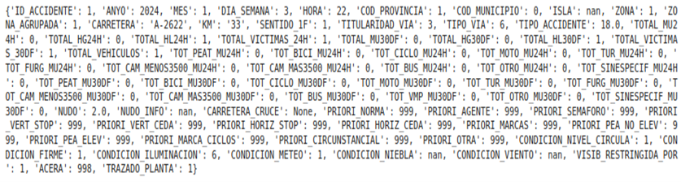
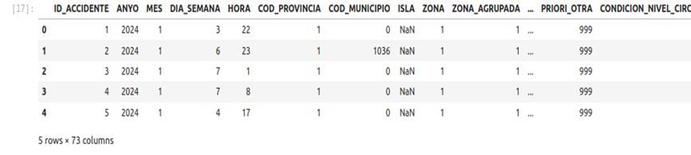

Ejercicio resuelto 4: Visualización de los datos en ficheros Avro y Parquet
Una vez generados los ficheros en los formatos Apache Avro y Apache Parquet, se procedió a verificar la integridad de la información mediante procesos de deserialización y visualización.
Dado que ambos formatos almacenan los datos mediante una representación binaria, su contenido no puede consultarse directamente mediante herramientas convencionales de visualización de texto. Por este motivo, se emplearon bibliotecas específicas capaces de interpretar los formatos y reconstruir los registros originales a partir de los datos serializados.
En el caso del formato Apache Avro, la lectura de los datos se realiza mediante la biblioteca Fastavro, encargada de interpretar el esquema asociado al fichero y recuperar los registros almacenados.
Para los ficheros Apache Parquet, se utiliza la biblioteca PyArrow, integrada con Pandas, permitiendo reconstruir la información en forma de tablas y facilitando su posterior análisis.
La visualización de los datos se llevó a cabo mediante Jupyter Notebook, mostrando una representación tabular de los primeros registros del conjunto de datos. Esta validación permite comprobar que la conversión desde el formato CSV se ha realizado correctamente.
Objetivo del ejercicio
El objetivo de este ejercicio es comprobar mediante procesos de deserialización y visualización que los datos almacenados en los formatos Avro y Parquet conservan correctamente la información del conjunto de datos original.
- Leer un fichero almacenado en formato Avro.
- Utilizar la biblioteca Fastavro para recuperar los registros.
- Leer un fichero almacenado en formato Parquet.
- Utilizar PyArrow y Pandas para reconstruir los datos.
- Visualizar los registros mediante Jupyter Notebook.
- Comprobar la correspondencia entre los datos originales y los datos deserializados.
- Validar la correcta conversión de los ficheros.
1. Visualización de los datos en formato Avro
El primer proceso de validación consiste en recuperar la información almacenada en el fichero accidentes.avro.
Para realizar esta operación se utiliza la biblioteca Fastavro, que permite leer el esquema del fichero y acceder a los registros almacenados en formato binario.
Un ejemplo del procedimiento utilizado desde Jupyter Notebook es el siguiente:
with open("accidentes.avro", "rb") as f:
avro_reader = reader(f)
records = list(avro_reader)
records[:5]
Mediante este procedimiento se abre el fichero en modo binario
y se utiliza reader() para interpretar el contenido
de acuerdo con el esquema Avro. Los registros recuperados pueden
posteriormente visualizarse desde el propio entorno de Jupyter
Notebook.

Figura 46. Visualización de los datos almacenados en formato Avro mediante Jupyter Notebook. Fuente: elaboración propia.
La visualización de los primeros registros permite comprobar que los datos almacenados en el fichero Avro pueden recuperarse correctamente y mantienen la estructura y los valores correspondientes al conjunto de datos original.
2. Visualización de los datos en formato Parquet
El segundo proceso de validación se realiza sobre el fichero accidentes.parquet.
Para acceder a la información almacenada se utiliza PyArrow, una biblioteca que proporciona funcionalidades para trabajar con el formato Parquet y que permite integrarse directamente con Pandas.
Desde Jupyter Notebook se puede realizar la lectura mediante el siguiente procedimiento:
df = pd.read_parquet(
"accidentes.parquet",
engine="pyarrow"
)
df.head()
La función read_parquet() permite recuperar el
contenido del fichero y almacenarlo en un
DataFrame de Pandas. Posteriormente,
df.head() permite visualizar los primeros registros
de la tabla.

Figura 47. Visualización de los datos almacenados en formato Parquet mediante Jupyter Notebook. Fuente: elaboración propia.
La representación tabular obtenida permite comprobar que los registros almacenados en Parquet pueden recuperarse correctamente y que las diferentes columnas mantienen la información del conjunto de datos original.
3. Comprobación de la integridad de los datos
La visualización de los registros constituye una comprobación práctica de la correcta transformación de los datos desde el formato CSV hacia los formatos Avro y Parquet.
Para realizar esta validación se comprueba que los nombres de las variables, la estructura de los registros y los valores almacenados coinciden con la información disponible en el conjunto de datos original.
La correcta visualización de los datos proporciona una evidencia de que los procesos de serialización realizados en los ejercicios anteriores han conservado la información necesaria para su posterior explotación.
Comparación de la visualización de Avro y Parquet
Aunque ambos formatos utilizan una representación binaria, el procedimiento empleado para recuperar la información presenta algunas diferencias.
- Avro: utiliza un esquema asociado al fichero y puede ser leído mediante bibliotecas como Fastavro, recuperando los registros almacenados.
- Parquet: utiliza una organización columnar y puede ser leído mediante PyArrow, integrándose directamente con Pandas.
- Jupyter Notebook: proporciona un entorno interactivo que permite visualizar, comprobar y analizar los datos una vez deserializados.
Integración con la arquitectura Big Data
El proceso de visualización desarrollado en este ejercicio demuestra la integración entre las diferentes tecnologías utilizadas en la infraestructura del proyecto.
HDFS proporciona el sistema de almacenamiento distribuido, mientras que los formatos Avro y Parquet permiten almacenar los datos mediante estructuras optimizadas para diferentes necesidades de procesamiento.
Por su parte, Python y Jupyter Notebook proporcionan un entorno flexible para la inspección y validación de la información almacenada.
Esta integración permite establecer una metodología de trabajo en la que los datos pueden ser ingeridos, almacenados, serializados, deserializados y posteriormente analizados dentro de una misma infraestructura Big Data.
4. Anexos del ejercicio
Para ampliar la comprobación realizada en este ejercicio, se incluyen en los anexos las evidencias correspondientes a la visualización de los datos almacenados en ambos formatos.
accidentes.avro mediante Jupyter Notebook.
accidentes.parquet mediante Jupyter Notebook.
Resultado del ejercicio
Al finalizar el ejercicio se ha comprobado mediante procesos de deserialización y visualización que los datos almacenados en los formatos Avro y Parquet pueden ser recuperados correctamente.
En el caso de Avro se ha utilizado la biblioteca Fastavro para interpretar el esquema y recuperar los registros. Para Parquet se ha empleado PyArrow integrado con Pandas, permitiendo representar los datos mediante un DataFrame.
La visualización realizada mediante Jupyter Notebook permite comprobar la correspondencia entre las variables y los valores del conjunto de datos original y los obtenidos después del proceso de serialización.
Este ejercicio completa el proceso iniciado con la conversión de los datos a formatos binarios y demuestra que la información puede ser posteriormente recuperada y utilizada para tareas de análisis. De esta forma, los datos quedan preparados para futuras etapas de procesamiento distribuido mediante Hadoop MapReduce, Hive u otras herramientas del ecosistema Big Data.